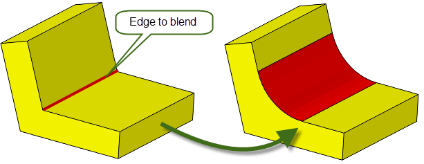
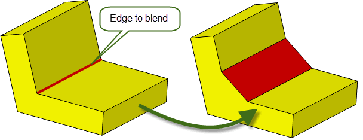
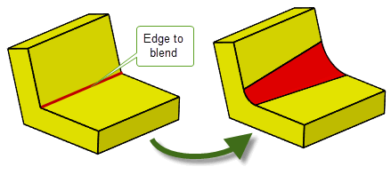
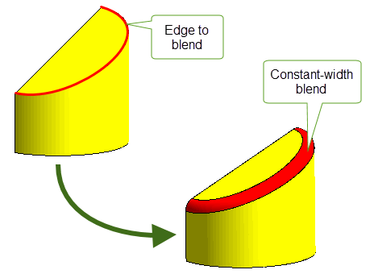
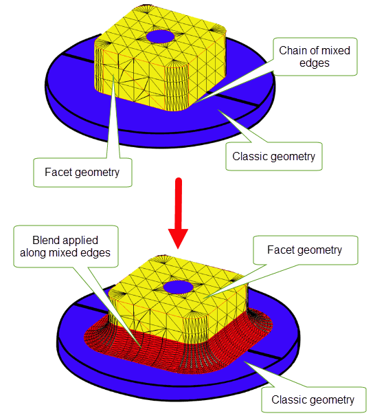
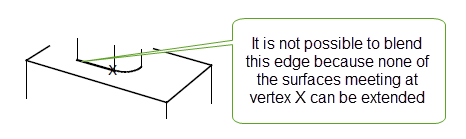

| |
Edge Blending Overview |
| <<< Introduction To Blending | Chapters | Edge Blending Options >>> |
Parasolid provides three forms of blending:
Edge blending smooths off an edge or list of edges, by introducing a new face or faces to a body. The resulting blend faces are usually tangent-continuous with the adjoining faces.
|
Note: Edge blending offers partial support for facet geometry. Face-face blending and three-face blending do not support facet geometry. |
This chapter and the next few chapters describe Parasolid’s edge blending functionality. It is split into the following sections:
Face-face blending is described in Chapter 78, “Face-Face Blending”.
Edge blending and face-face blending should not be thought of as alternatives, but as two approaches that work together powerfully, because their strengths and weaknesses are complementary.
Three-face blends are a special case of face-face blends in which a blend is created between three sets of faces, rather than two. Three-face blends are described in Chapter 79, “Three-Face Blending”.
Edge blends are initially defined, or set, using one of the functions described in Section 75.3, “Types of edge blend”. Calling these functions attaches blend data to edges on a body in the form of attributes. Blends that are attached to edges in this way are referred to as unfixed.
To actually create blends on a series of edges, the unfixed blends need to be incorporated into the body (fixed) as faces that replace the edges to which the blend attributes were attached. Edge blends are fixed using PK_BODY_fix_blends, as described in Section 75.4.3, “Fix the blends in a body”.
|
Warning: You are strongly recommended not to change the topology or geometry of a model between setting and fixing an edge blend. Doing so may lead to invalid results. |
Once a blend has been fixed, it may not be possible to restore the original edge, except by using rollback to unwind the modeling operation(s). See Chapter 98, “Rollback”, for more information.
There are four types of edge blend:
Each type of edge blend is set (that is, blend attributes are attached to the blend edges) using the functions listed below. Blends can then be fixed using PK_BODY_fix_blends.
|
Note: You should not attempt to fix a mixture of chamfers and rolling-ball blends in a single call to PK_BODY_fix_blends. |
You can create each type of edge blend on general bodies, so long as the body is locally manifold in the area of the blend.
Rolling-ball blends have a constant circular or curvature-continuous cross-section; they are the result of rolling a sphere along two surfaces adjoining an edge (see Figure 75-1). The extent of rolling-ball blends is determined by specifying the radius of the sphere. For more information, see Section 76.2, “Blend specific options”.
Figure 75-1 Rolling-ball blend
PK_EDGE_set_blend_chain and PK_EDGE_set_blend_chamfer
Chamfers are blends that have a linear cross-section (see Figure 75-2). There are two types of chamfer blends: face offset chamfers and apex-range chamfers.
Face offset chamfer blends can be determined by the intersection between offset surfaces that are defined using the
range_1
and
range_2
arguments in PK_EDGE_set_blend_chamfer or using options in PK_EDGE_set_blend_chain. See Section 76.2.3.1, “Options for face offset chamfers”, for more information.
Apex-range chamfers provide an alternative way of controlling the boundaries of a chamfer blend, and can be created using options in PK_EDGE_set_blend_chain. See Section 76.2.3, “Options for chamfer blends” for more information.
Variable rolling-ball blends are those where the size of the blend (e.g. the blend radius, in the case of a blend with a circular cross-section) varies along the chain of edges being blended as shown in Figure 75-3. Variable rolling-ball blends may have circular, conic, or curvature-continuous cross-sections. For more information, see Section 76.2.2, “Options for variable radius blends”.
Figure 75-3 Variable rolling-ball blend
Constant-width blends are blends where the amount of blend material is constant along the whole blend as shown in Figure 75-4.
This type of blend can be useful when the angle between the edges to be blended varies along the extent of the blend, but you want to keep the amount of blend material constant along the whole blend. For more information, see Section 76.2.4, “Options for constant-width blends”.
Figure 75-4 Constant-width blend
As well as creating an unfixed blend, you can also enquire the properties of any unfixed blends, remove the blend attributes of an unfixed blend, and fix the blend.
This section provides a brief overview of the functionality available for enquiring various properties of edge blends. See the API documentation for each function in the PK Interface Programming Reference Manual for more information.
|
PK_EDGE_ask_blend returns information about the parameters of the unfixed blend on a given edge:
|
|
|
PK_BLENDSF_ask returns the standard form of a rolling-ball blend surface. See Section 75.8, “Outputting fixed blend surfaces”, for more information. |
PK_EDGE_remove_blend removes an unfixed blend from the given edge. If the blend was set using PK_EDGE_set_blend_chain, then the unfixed blend is removed from all edges in the chain of which the given edge forms a part.
PK_BODY_fix_blends changes any edges of the body which have blend attributes into full faces with the appropriate blending surface geometry.
PK_BODY_fix_blends supports a wide range of options for controlling the appearance of the fixed blend. See Section 76.3, “Options when fixing blends”, for more details.
There are a number of limitations which determine whether a particular edge can be blended. These limitations are based both on the underlying topology and geometry of the edge and the presence of blends on adjacent edges. Some limitations are general while others are related to the number of adjacent edges that are blended.
The geometry of blends can be extremely complex, and it is not possible to lay down hard and fast rules which can always be guaranteed to apply. The following sections give general rules of thumb which apply in the majority of cases.
An exception to this is if you use the
inside_tight
option described in Section 76.3.13, “Creating blends inside tight corners”. Another exception is the following configuration where the rolling-ball blend (edge 1) is smaller than the blend applied to edge 2:
Figure 75-5 Exception to the previous rule
You can successfully blend facet or mixed edges if all of the following are true at the start of a blend operation:
Figure 75-6 Performing edge blending on facet bodies that have varying convexity
Figure 75-7 Blending chains of mixed edges
If three edges meet at the vertex, it is normally possible to blend one of them. The occasion when it is not possible to blend one of the edges is when the end surface is undefined. For example:
Figure 75-8 Limitation of blending one edge at a vertex
Although it is fairly straightforward to describe illegal blends it is much harder to generate rules of thumb which guarantee that blends are legal. In particular it is often difficult to avoid falling over the illegal overlap/intersection type errors caused by choosing too large blend radii. However, the following rules and tips are worth considering but always remember that it is best to make and fix blends in small groups:
If more than three edges meet at a vertex it is usually possible to blend one of them providing that:
You can successfully blend two of the edges at a three-edge vertex in the following situations:
|
Note: You cannot blend two edges of different convexity if either or both of the requested blends is a chamfer blend or a constant-width blend. |
Figure 75-9 Blending two edges at a three-edge vertex
When all three edges of a three-edge vertex are blended simultaneously (put them on and fix them as a group), an extra blend face is added to smooth out the vertex.
|
Note: You cannot blend three edge at a three-edge vertex if the blend is a constant-width blend. |
When blending two edges of a four-edge vertex with a rolling-ball blend, the following constraints are applied:
|
Note: The two edges to be blended must both be picked before either blend is fixed. |
Some common cases are illustrated in Figure 75-10. The illustrations show the “before” and “after” for each case; in the left hand picture of each example, the four-edge vertex is surrounded by a dotted circle.

Figure 75-10 Blending two edges at four-edge vertices
For an example of vertex blending, see the code example in the
C++\Code
Examples\Modelling\Blending\Edge\Vertex
Blending
folder, located in
example_applications
in your Parasolid installation folder.
In principal edges at which one or both of the adjoining surfaces is parametric can be blended subject to the same restrictions as any other edge. However, the nature of B-surface definitions introduces extra restrictions on blending:
When creating variable radius blends (VRBs) using PK_EDGE_set_blend_chain, the following criteria must be satisfied:
For an example of variable radius blends, see the code example in the
C++\Code
Examples\Modelling\Blending\Edge\Variable
Radius
Blending
folder, located in
example_applications
in your Parasolid installation folder.
Section 76.2.2, “Options for variable radius blends” for more information on variable radius blend options.
PK_BLENDSF_ask outputs the data describing a fixed blend surface. Internally there is only one type of blend surface, the blended edge, which is used for a face which smooths out an edge or a vertex, e.g. that which is used to smooth out a three-edge vertex when two of the blends add material and the other removes material (or vice versa).
The data which is returned for a blended edge is:
geom_1
,
geom_2
- the two surfaces which met at the edge which was originally blended
radii[2]
- the ranges on the corresponding surfaces
spine
- the curve defining the center of the rolling-ball
spine_ext
- the valid region of the spine curveThe chamfer blend type is never returned, the surfaces introduced by fixing chamfers are always planes, cylinders, cones or B-surfaces.
Wherever possible, Parasolid simplifies fixed rolling-ball blends to tori and cylinders.
PK_BLENDSF_ask can only be used to output a surface of type PK_CLASS_blend. PK_ENTITY_ask_class may be used to determine the type of surfaces created by fixing blends.
| <<< Introduction To Blending | Chapters | Edge Blending Options >>> |